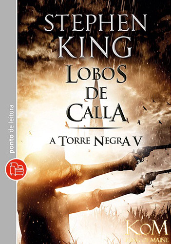

A Torre Negra
Stephen King
“O Homem de preto fugia pelo deserto e o pistoleiro ia atrás...”
Sobre o autor
Stephen Edwin King (Portland, 21 de setembro de 1947) é um escritor norte-americano de terror, ficção sobrenatural, suspense, ficção científica e fantasia. Seus livros já venderam mais de 400 milhões de cópias,com publicações em mais de 40 países.
A Saga
A Torre Negra, é uma série literária de sete livros, do escritor americano Stephen King. Misturando alta fantasia, faroeste, ficção científica e terror numa narrativa que forma um mosaico da cultura popular contemporânea, o enredo segue um "pistoleiro" e sua busca em direção a Torre Negra, cuja natureza é tanto física quanto metafórica. É considerada a magnum opus do escritor, e levou trinta e três anos para ser concluída (de 1970 a 2003).
Livros
Volume I - O Pistoleiro

Roland Deschain é o ultimo dos pistoleiros de seu mundo. Seu objetivo é a busca obstinada pela Torre Negra, dita como o eixo de todo o tempo e espaço. Acreditando que um mago, apelidado de "Homem de Preto", possui indicações para seu destino, o pistoleiro o persegue deserto afora. Pelo caminho, Roland passa por inúmeros perigos e conhece Jake, um menino que foi transportado para o mundo de Roland depois de morrer na Nova York de 1977.
Volume II - A Escolha dos Três
Depois de seu confronto com o homem de preto no final de O Pistoleiro, Roland acorda e encontra três portas na praia do mar Ocidental. Todas elas o conduzem a Nova Iorque, mas em três momentos distintos no tempo. Através destas portas, Roland vai ao encontro das três personagens cruciais para a sua busca da Torre Negra. Eddie Dean, o Prisioneiro, em 1987, Odetta Holmes, a Dama das Sombras, em 1964 e Jack Mortt, A Morte, em 1977.
Volume III - As Terras Devastadas
Roland, Eddie e Susannah, seguem a trilha de destruição de Shardik e encontram um dos doze portais que levam até a Torre Negra. Jake Chambers, em Nova York, encontra a rosa e a chave e consegue atravessar ao Mundo Médio.O Ka-tet chega a cidade de Lud, dominada pelo monotrilho Blaine. Roland propõe a Blaine um acordo: se conseguirem vence-lo em um jogo de adivinhações, o mootrilho terá que levá-los até seu destino.
Volume IV - Mago e Vidro
Depois de enfrentar a terrível ameaça do monotrilho Blaine, o último pistoleiro e seus seguidores desembarcam na cidade de Topeka, no Kansas, e retomam o caminho do Feixe de Luz que conduz à Torre Negra. Roland revela então aos companheiros a história de seu passado, e a trágica perda de seu grande amor de juventude, a bela Susan Delgado.
Volume V - Lobos de Calla
Roland e seu grupo de pistoleiros vão parar na cidade de Calla, que está prestes a ser atacada pelos Lobos - cavaleiros mascarados que surgem uma vez a cada geração para roubar metade das crianças do local e devolvê-las semanas depois, física e mentalmente incapacitadas. Enquanto isso, na Nova York de 1977, a Corporação Sombra planeja atacar o terreno baldio onde floresce a Rosa, manifestação da Torre Negra no mundo atual.
Volume VI - Canção de Susannah
Mia roubou o corpo de Susannah Dean, usando o poder do Treze Preto para transportá-la para a Nova York de 1999, onde pretende dar à luz em segurança ao seu "xapinha". Para salvar a Torre Negra, é preciso não apenas resgatar Susannah, mas também manter em segurança o terreno baldio de Calvin Tower. O restante do katet se une aos Mannis, tentando abrir um portal na Gruta do Vão da Porta. Enquanto Eddie e Rolland aterrissam no Maine dos anos 1970 e Jake, Oi e Callahan perseguem Susanna por Nova York.
Volume VII - A Torre Negra
O Contra tudo e contra todos, Roland segue em direção a Torre Negra, a fim de confrontar o maior inimigo de todos, o Rei Rubro, cérebro de toda a conspiração contra a Torre Negra e contra a ordem. último volume da saga releva o desfecho da busca de Roland pela Torre Negra, novos desafios serão impostos ao Pistoleiro, que precisará fazer escolhas difícies e enfrentar grandes perdas.
Todos os textos são adaptações de conteúdos disponíveis na internet.